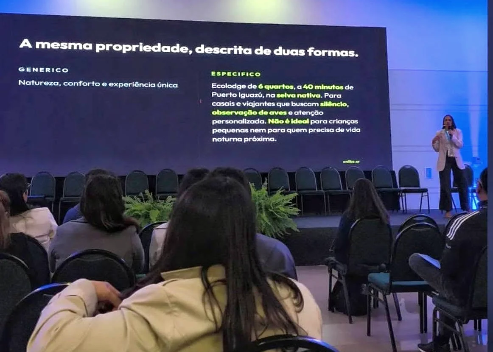

Buenas reseñas.
Pocas consultas.
Puede ser una temporada floja que nadie sabe explicar, la dependencia de un solo canal, o un producto que en persona es excelente y en pantalla parece uno más. Analizo cómo el viajero encuentra, entiende, compara y elige tu negocio, y dónde se pierden las consultas antes de llegar a vos. Y cuando hace falta, lo ordeno yo.
Alojamientos, experiencias y proyectos turísticos que ya funcionan
Cuando el producto ya existe
y hay una decisión por tomar.
- Entran menos consultas y no está claro cuánto es del mercado y cuánto es tuyo.
- Tenés buenas reseñas y pocas consultas.
- Las cosas van bien y querés saber si las estás haciendo bien, o qué te falta para captar más.
- Estás por invertir en publicidad, en una web nueva o en una agencia, y querés saber dónde poner la plata primero.
- Dependés de un solo canal, sea Booking, una agencia o el boca en boca.
- La experiencia real es mucho mejor que lo que muestran la web y las plataformas.
- Tenés el producto, pero lo digital está desarmado y no tenés quién lo ordene.
- Querés llegar a un viajero nuevo: otro país, otro idioma, otro segmento.
Podés llegar sin saber qué te pasa. El trabajo empieza justamente por ahí.
Me pasa estoLa reserva se pierde
mucho antes del botón de reservar.
En turismo casi toda la decisión se toma a distancia y por adelantado, con lo que aparece en una pantalla y con lo que cuenta alguien que ya fue. La etapa que define es la que casi nadie mira: la consideración, el momento en que el viajero arma su lista corta. Lo que queda afuera de esa lista no compite por precio, ni por fotos, ni por reseñas. Y como la consulta nunca llega, tampoco llega la señal de que algo está fallando. Se siente como temporada floja.
Mientras la respuesta a una búsqueda era una página de resultados, quedar octavo todavía era quedar. Hoy la respuesta son tres nombres.
24%
de los viajeros ya usa IA generativa para planificar. Era 8% en 2023.
Deloitte, 2025
78%
de los que la usaron dicen que les sirvió para planificar o moverse en destino.
Phocuswright
8%
se siente cómodo reservando directamente desde una IA.
Expedia Group
Ese último número ordena todo lo demás. La IA todavía no se lleva la reserva: te da o te quita el lugar en la lista. Después el viajero entra igual a tu sitio, a tu Google y a tus reseñas, y si ahí encuentra cosas que no coinciden, se va igual.
La calidad de lo que ofrecés suele estar. Lo que falta es que esté traducida, conectada y comprobable en digital.
Para seguir leyendo: Cuánto bajó realmente el turismo en Argentina → · Por qué bajaron las consultas →
La pregunta que decide es una:
¿quién lo va a hacer?
Auditoría
Te muestro qué pasa y en qué orden resolverlo.
Para cuando tenés equipo, alguien que maneja tus redes o ganas de hacerlo vos. Recibís un diagnóstico con evidencia, una hoja de ruta ordenada por impacto, con criterio de pauta incluido, y una reunión en vivo para bajar todo a decisiones.
Ordenamiento digital
Lo dejo hecho.
Para cuando el producto es bueno, lo digital está desarmado y no hay quién lo ejecute. Recibís todo armado y funcionando: una promesa clara y el viajero al que le hablás, precios y paquetes ordenados en las monedas de tu mercado, la experiencia escrita en los idiomas que hagan falta, tu ficha de Google y Maps, WhatsApp Business con catálogo, Instagram y Facebook ordenados, y las reseñas respondidas.
Se hace por etapas. Primero, lo que el viajero ve cuando te busca. Después, según tu caso, Booking, la web o la visibilidad.
El ordenamiento siempre parte de una lectura previa: una auditoría o Cómo te ve un viajero. Con esa base decidimos qué hago yo y qué hacés vos.
Recorro tu negocio
como lo recorre el viajero.
Y también como lo lee una máquina: las señales que confunden a una persona confunden a un buscador, y las que aclaran, aclaran para los dos. Antes de mirar un solo canal te paso un cuestionario sobre cómo funciona el negocio desde adentro. Después cruzo eso con lo que encuentro afuera.
01
Mercado y demanda
Qué parte de la baja es del mercado y qué parte se corrige desde adentro. Qué viajero tiene afinidad real con tu propuesta.
02
Propuesta y legibilidad
Qué entiende alguien que llega sin conocerte: qué es, para quién, qué incluye y por qué vale lo que cuesta.
03
Ecosistema digital
Sitio, Google, mapas, redes, WhatsApp y plataformas de reserva, y si trabajan juntos.
04
Reputación y confianza
Reseñas, menciones y credenciales. Qué celebra el huésped y si eso aparece en tu comunicación.
05
Comercialización
Qué pasa entre el interés y la confirmación: precios, políticas, pagos, tiempos de respuesta e intermediarios.
06
Buscadores e IA
Cómo te encuentran, interpretan y comparan Google y las IA, y qué señales tienen para recomendarte.
Lo que aparece cuando se cruzan las dos miradas
"Nos falta gente porque estamos lejos."
El competidor gana por señales acumuladas durante veinte años, más que por estar más cerca.
"La plataforma nos convierte poco."
Tres razones concretas, todas identificables y todas corregibles.
"Somos rústicos, es parte del encanto."
Esa palabra estaba abaratando un producto premium, y se repetía en todas partes.
Todas las preguntas que me hago cuando miro un negocio turístico están en la nota Qué te llevás de una auditoría de tu negocio turístico →
El valor ya existía.
Estaba escondido.
Un ecolodge de avistaje de aves con años de trayectoria, reputación sobresaliente y huéspedes que vuelven, atravesando temporadas de baja ocupación que nadie terminaba de explicar.
La auditoría encontró una credencial internacional que ningún competidor de la zona podía igualar, escondida detrás de un link que nadie clickeaba; una web que mostraba las habitaciones y dejaba en segundo plano la experiencia; autoridad acumulada en medios y guías, pero desconectada; y dos líneas de negocio compartiendo los mismos canales.
La pregunta cambió. De publicar más, a entrar en la consideración del viajero correcto, con una identidad clara y menos fricción hasta la reserva.
El caso completo, en video, junto con el de un hotel boutique de Puerto Iguazú: leer la nota →
Turismo, estrategia digital
y negocios reales.
Soy Laura Silvester, licenciada en Turismo por la Universidad Nacional de Misiones, docente de marketing turístico en nivel superior y fundadora de Onlike. Más de veinte años en el sector, con experiencia en gestión hotelera.
Esa combinación cambia la forma de analizar un proyecto turístico. Miro cómo funciona la propuesta dentro del sistema turístico: qué espera el viajero, cómo valida, con qué compara, qué intermediarios intervienen y qué frena la elección.
En junio de 2026 diserté sobre inteligencia artificial y comportamiento del viajero en el Fórum Internacional de Turismo do Iguassu, en Foz do Iguaçu, ante estudiantes y docentes de turismo de Brasil y Argentina.

Cómo te ve un viajero
$90.000
Una revisión de alcance fijo. Miro tu negocio en los cinco lugares donde el viajero te compara antes de decidir: las plataformas donde vendés, Google, Instagram y Facebook, WhatsApp y ChatGPT. Te entrego por escrito qué encontré y qué cambiar primero.
Ver cómo funcionaSi preferís hacer una primera revisión por tu cuenta, está el checklist gratuito de legibilidad digital: siete preguntas, sin dejar datos.
Lo que siempre
me preguntan.
¿Es una auditoría de redes sociales?
Las redes son una parte. La auditoría estudia el ecosistema completo: el recorrido del viajero, la propuesta, el sitio, las búsquedas, los mapas, la reputación, las plataformas de reserva, el contacto y la comercialización.
¿Trabajás solamente con hoteles?
Con cualquier negocio turístico: alojamientos, ecolodges, cabañas, hosterías, glamping, agencias, turismo receptivo, guías, excursiones, experiencias y restaurantes con público turístico. El alcance cambia según el modelo de negocio.
¿Incluye posicionamiento en inteligencias artificiales?
Sí. Es una capa de todos los trabajos: cómo te encuentran, interpretan y comparan las IA cuando alguien busca lo que ofrecés.
¿Implementás vos o solo decís qué hacer?
Las dos cosas, según quién vaya a ejecutar. Con la auditoría te llevás el qué y el orden, para que lo haga tu equipo o quien maneja tus redes. Con el ordenamiento digital lo dejo hecho yo. Y si preferís hacerlo vos con acompañamiento, la auditoría puede seguir con una mentoría 1:1.
¿Manejás mis redes todas las semanas?
El ordenamiento deja todo armado y funcionando. Lo que se publica después lo manejás vos o quien elijas.
¿Cómo se define el alcance y cuánto sale?
A partir de una primera conversación sobre el proyecto, su situación, sus mercados y la pregunta que necesitás responder. Cada caso pide revisar plataformas distintas, con distinta profundidad. Arranca en $300.000 y se define caso por caso.
¿Se puede trabajar de forma remota?
Sí. El relevamiento y la reunión de devolución se hacen en forma remota, en todo el país. En Misiones y la región también trabajo presencial.
¿En qué se diferencia una auditoría de Cómo te ve un viajero?
Cómo te ve un viajero mira cinco lugares fijos y te entrega por escrito qué encontré y qué cambiar primero. Cuesta $90.000 y el documento cierra el trabajo. La auditoría recorre todo tu ecosistema según el rubro, cruza lo que encuentro con lo que me contás, ordena las acciones por impacto y termina en una reunión de devolución. Si tu negocio es chico o querés empezar por algo acotado, Cómo te ve un viajero es el primer paso.
Antes de invertir más,
entendamos dónde está el problema.
Contame qué negocio tenés y qué está pasando hoy. Lo miro y te digo si tu caso pide una auditoría, un ordenamiento o empezar por Cómo te ve un viajero.
Con explicar qué está pasando alcanza para empezar.